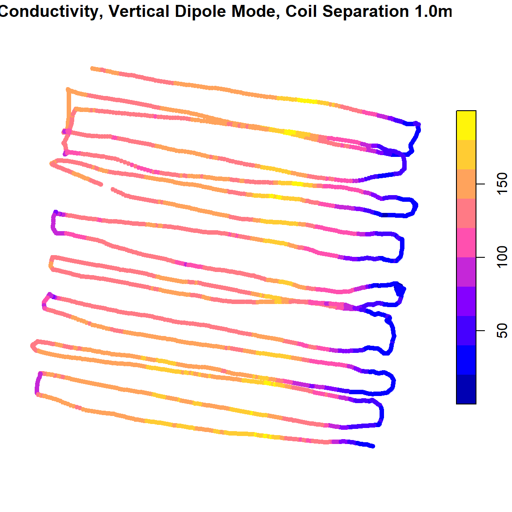
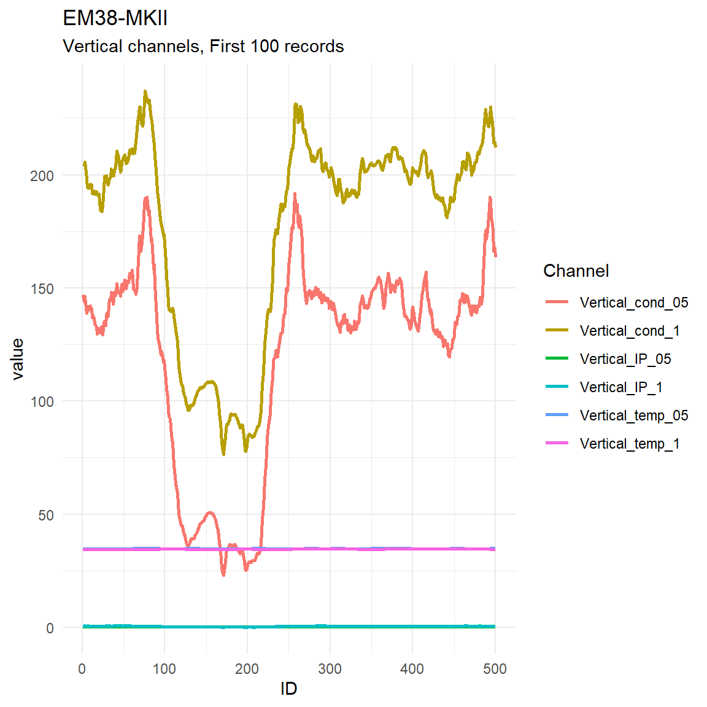
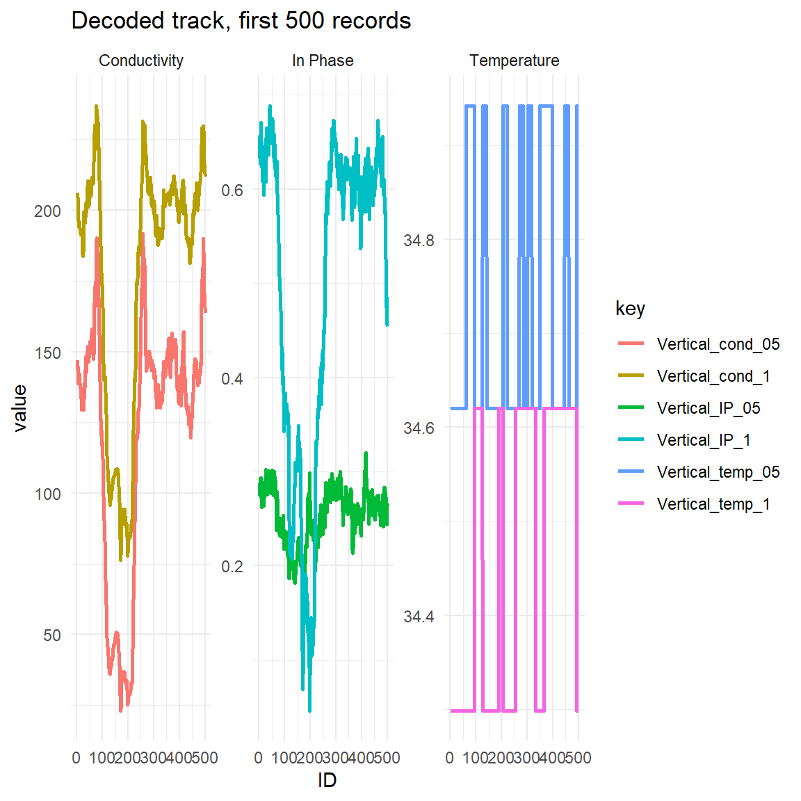
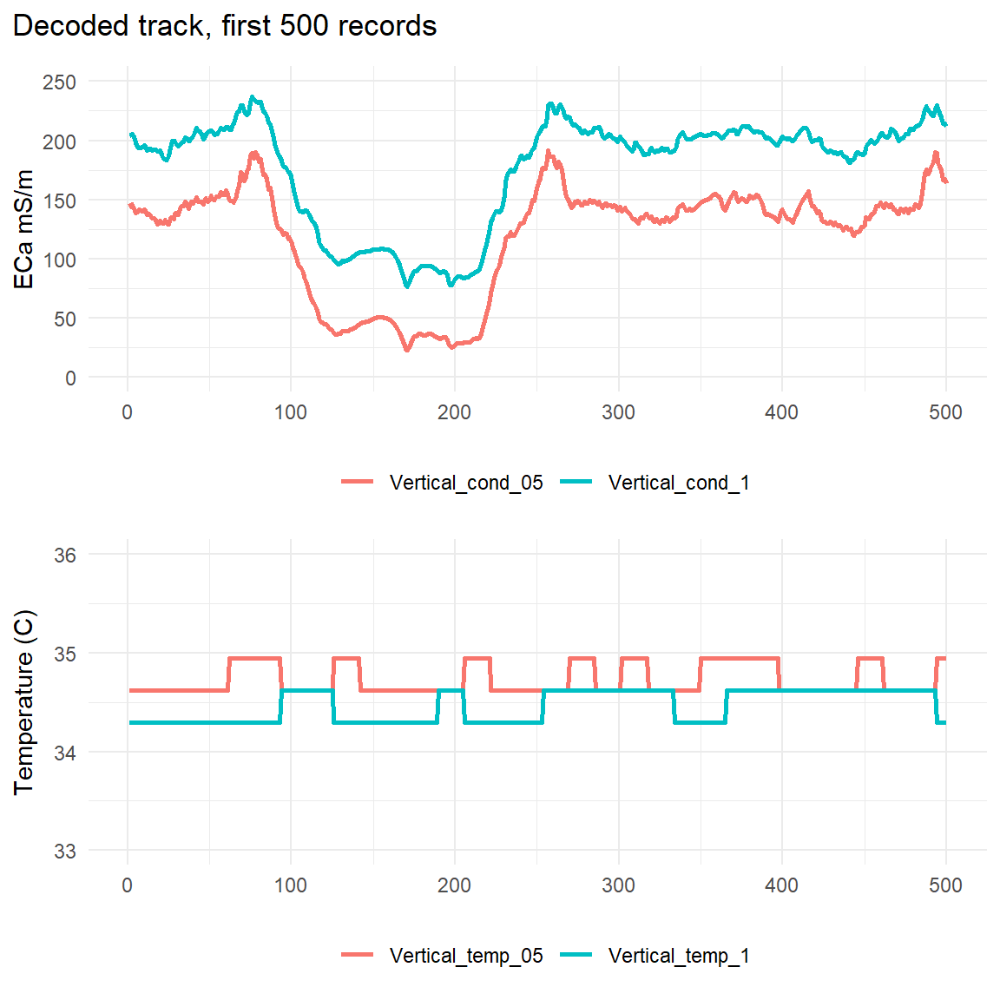

Using_em38.Rmdlibrary(em38)
library(sf)
library(dplyr)
library(tidyr)
library(ggplot2)
options(stringsAsFactors = FALSE)em38 offers an R-based alternative to the ‘DAT38MK2’ software that accompanies the Geonics EM38-MKII Ground Conductivity meter. The package can take in the *.n38 binary files produced by the device and its accompanying datalogger and either produce an sf-style point dataset or a replicate of the *.m38 plain-text logfile. The package also contains intermediate functions that step through the process of decoding the *.n38 binary files, hopefully demystifying the process somewhat.
This package allows users to incorporate EM38-MKII data into a fully reproducible workflow, and also makes it possible for non-Windows users to easily work with an EM38-MKII.
em38 requires only an *.n38 file as input, and can complete a one-line conversion with em38_from_file(). This will return a list containing the file header information, plus a processed list of survey lines. If GPS data is available for a survey line dataset, it will have sfc_POINT geometry and can be written to file using a vector spatial file format like GeoPackage. If no GPS data is available, the data can be written to *.csv.
demo_survey <-
em38_from_file(path = system.file("extdata", "em38_demo.N38",
package = "em38"),
hdop_filter = 3)
sl1 <- demo_survey$survey_lines[[1]]
ggplot(sl1) +
geom_sf(aes(col = cond_05), pch = 20, size = 2) +
scale_colour_viridis_c() +
labs(col = 'ECa mS/m') +
scale_y_continuous(breaks = c(-27.4423, -27.4424, -27.4425, -27.4426)) +
scale_x_continuous(breaks = c(151.4341, 151.4342, 151.4343, 151.4344, 151.4345)) +
ggtitle('EM38-MKII Conductivity',
subtitle = 'Vertical Dipole Mode, Coil Separation 0.5m') +
theme_minimal() +
coord_sf()
head(sf::st_set_geometry(sl1, NULL)[, c('ID', 'cond_05', 'date_time')])
#> ID cond_05 date_time
#> 1 1 146.9004 2018-03-16 13:00:23
#> 2 2 144.0879 2018-03-16 13:00:23
#> 3 3 146.0801 2018-03-16 13:00:23
#> 4 4 143.4239 2018-03-16 13:00:23
#> 5 5 138.8536 2018-03-16 13:00:23
#> 6 6 139.3614 2018-03-16 13:00:24If you want to visualise your decoded track data in R the same way DAT38MK2 does, some recipes follow using ggplot2.
Firstly, a basic graph of all the data. Drop the geometry, condense the dataset into two columns, and then plot with appropriate data grouping settings:
dat <- sf::st_set_geometry(sl1, NULL) %>%
dplyr::select(-indicator, -marker, -date_time) %>%
tidyr::gather('key', 'value', -ID, -mode) %>%
tidyr::unite('key', mode, key)
ggplot(dplyr::filter(dat, between(ID, 0, 500))) +
geom_path(aes(x = ID, y = value, group = key, col = key), size = 1) +
ggtitle("EM38-MKII",
subtitle = 'Vertical channels, First 100 records') +
labs(col = 'Channel') +
theme_minimal() 
Since conductivity and temperature readings are on very different scales, it is preferable to facet the plot. Below, an additional ‘measurement type’ grouping variable is added before plotting, and used to split the data into separate panels.
# better grouping - split out by measurement type
dat <- dat %>%
dplyr::mutate(TYPE =
dplyr::case_when(grepl('cond', key) ~ 'Conductivity',
grepl('IP', key) ~ 'In Phase',
grepl('temp', key) ~ 'Temperature'))
ggplot(dplyr::filter(dat, ID <= 500) %>% dplyr::filter(TYPE != 'INPHASE')) +
geom_path(aes(x = ID, y = value, group = key, col = key), size = 1) +
facet_wrap(~TYPE, scales = 'free_y', nrow = 3) +
ggtitle("EM38-MKII",
subtitle = 'Vertical channels, First 500 records') +
labs(col = 'Channel') +
theme_minimal()
If you want more control over plot aesthetics, patchwork is helpful:
# devtools::install_github("thomasp85/patchwork")
library(patchwork)
# common plot aesthetics
thm <- theme_minimal() +
theme(legend.position = 'bottom',
legend.title = element_blank(),
axis.title.x = element_blank())
cond <- ggplot(dplyr::filter(dat, ID <= 500) %>%
dplyr::filter(TYPE == 'Conductivity')) +
geom_path(aes(x = ID, y = value, group = key, col = key), size = 1) +
scale_y_continuous(limits = c(0, 250)) +
labs(y = 'ECa mS/m') +
thm
temp <- ggplot(dplyr::filter(dat, ID <= 500) %>%
dplyr::filter(TYPE == 'Temperature')) +
geom_path(aes(x = ID, y = value, group = key, col = key), size = 1) +
scale_y_continuous(limits = c(33, 36)) +
labs(y = 'Temperature (C)') +
thm
cond + temp +
plot_annotation(title = 'Decoded track, first 500 records') +
plot_layout(nrow = 2)